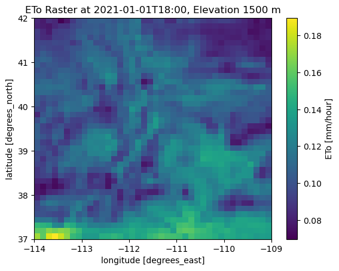

Download NLDAS Data
Import Dependencies
[33]:
import sys
import pandas as pd
import matplotlib.pyplot as plt
import configparser
import pathlib
import micromet
import xarray as xr
[34]:
sys.path.append("../../src")
import fluxfootprints
[35]:
spath = "../../secrets/config.ini"
sconfig = configparser.ConfigParser()
sconfig.read(spath)
ed_pass = sconfig['NLDAS']['pw']
ed_user = sconfig['NLDAS']['user']
To use this part of the module, you must register with the NASA Earthdata Login Page. The example below downloads hourly data from the site for North America.
[36]:
import datetime
#nldas_out_dir = Path('C:/Users/paulinkenbrandt/Documents/GitHub/MicroMet/Notebooks/Footprints')
for date in pd.date_range(start='2021-01-01', end='2021-01-02',freq='h'):
hour = date.hour
fluxfootprints.download_nldas(date,
hour,
ed_user,
ed_pass,)
NLDAS_data\2021_01_01_00.nc already exists, not overwriting.
NLDAS_data\2021_01_01_01.nc already exists, not overwriting.
NLDAS_data\2021_01_01_02.nc already exists, not overwriting.
NLDAS_data\2021_01_01_03.nc already exists, not overwriting.
NLDAS_data\2021_01_01_04.nc already exists, not overwriting.
NLDAS_data\2021_01_01_05.nc already exists, not overwriting.
NLDAS_data\2021_01_01_06.nc already exists, not overwriting.
NLDAS_data\2021_01_01_07.nc already exists, not overwriting.
NLDAS_data\2021_01_01_08.nc already exists, not overwriting.
NLDAS_data\2021_01_01_09.nc already exists, not overwriting.
NLDAS_data\2021_01_01_10.nc already exists, not overwriting.
NLDAS_data\2021_01_01_11.nc already exists, not overwriting.
NLDAS_data\2021_01_01_12.nc already exists, not overwriting.
NLDAS_data\2021_01_01_13.nc already exists, not overwriting.
NLDAS_data\2021_01_01_14.nc already exists, not overwriting.
NLDAS_data\2021_01_01_15.nc already exists, not overwriting.
NLDAS_data\2021_01_01_16.nc already exists, not overwriting.
NLDAS_data\2021_01_01_17.nc already exists, not overwriting.
NLDAS_data\2021_01_01_18.nc already exists, not overwriting.
NLDAS_data\2021_01_01_19.nc already exists, not overwriting.
NLDAS_data\2021_01_01_20.nc already exists, not overwriting.
NLDAS_data\2021_01_01_21.nc already exists, not overwriting.
NLDAS_data\2021_01_01_22.nc already exists, not overwriting.
NLDAS_data\2021_01_01_23.nc already exists, not overwriting.
NLDAS_data\2021_01_02_00.nc already exists, not overwriting.
[37]:
# Load the NetCDF file
ds = xr.open_dataset("./NLDAS_data/2021_01_01_00.nc")
# Inspect the dataset structure
print(ds)
var = ds['PotEvap']
# Plot a 2D slice (e.g., first time step if it has a time dimension)
var.isel(time=0).plot()
<xarray.Dataset> Size: 5MB
Dimensions: (lon: 464, lat: 224, time: 1, bnds: 2)
Coordinates:
* lon (lon) float32 2kB -124.9 -124.8 -124.7 ... -67.31 -67.19 -67.06
* lat (lat) float32 896B 25.06 25.19 25.31 ... 52.69 52.81 52.94
* time (time) datetime64[ns] 8B 2021-01-01
Dimensions without coordinates: bnds
Data variables:
time_bnds (time, bnds) datetime64[ns] 16B ...
Tair (time, lat, lon) float32 416kB ...
Qair (time, lat, lon) float32 416kB ...
PSurf (time, lat, lon) float32 416kB ...
Wind_E (time, lat, lon) float32 416kB ...
Wind_N (time, lat, lon) float32 416kB ...
LWdown (time, lat, lon) float32 416kB ...
CRainf_frac (time, lat, lon) float32 416kB ...
CAPE (time, lat, lon) float32 416kB ...
PotEvap (time, lat, lon) float32 416kB ...
Rainf (time, lat, lon) float32 416kB ...
SWdown (time, lat, lon) float32 416kB ...
Attributes: (12/17)
missing_value: -9999.0
time_definition: hourly
shortname: NLDAS_FORA0125_H_2.0
title: NLDAS Primary Forcing Data L4 Hourly 0.125 x 0.12...
version: 2.0
institution: NASA GSFC
... ...
websites: https://ldas.gsfc.nasa.gov/nldas/ ; https://lis.g...
MAP_PROJECTION: EQUIDISTANT CYLINDRICAL
SOUTH_WEST_CORNER_LAT: 25.0625
SOUTH_WEST_CORNER_LON: -124.9375
DX: 0.125
DY: 0.125
[37]:
<matplotlib.collections.QuadMesh at 0x20454720550>
This function clips the downloaded data to the boundaries of Utah (USA), and lumps the data into efficient file formats labeled by year.
[38]:
fluxfootprints.clip_to_utah_merge(file_dir="./NLDAS_data/", years = [2021])
2021
NLDAS_data\2021_01_01_00.nc
NLDAS_data\2021_01_01_01.nc
NLDAS_data\2021_01_01_02.nc
NLDAS_data\2021_01_01_03.nc
NLDAS_data\2021_01_01_04.nc
NLDAS_data\2021_01_01_05.nc
NLDAS_data\2021_01_01_06.nc
NLDAS_data\2021_01_01_07.nc
NLDAS_data\2021_01_01_08.nc
NLDAS_data\2021_01_01_09.nc
NLDAS_data\2021_01_01_10.nc
NLDAS_data\2021_01_01_11.nc
NLDAS_data\2021_01_01_12.nc
NLDAS_data\2021_01_01_13.nc
NLDAS_data\2021_01_01_14.nc
NLDAS_data\2021_01_01_15.nc
NLDAS_data\2021_01_01_16.nc
NLDAS_data\2021_01_01_17.nc
NLDAS_data\2021_01_01_18.nc
NLDAS_data\2021_01_01_19.nc
NLDAS_data\2021_01_01_20.nc
NLDAS_data\2021_01_01_21.nc
NLDAS_data\2021_01_01_22.nc
NLDAS_data\2021_01_01_23.nc
NLDAS_data\2021_01_02_00.nc
---------------------------------------------------------------------------
KeyError Traceback (most recent call last)
File c:\Users\paulinkenbrandt\.conda\envs\py313\Lib\site-packages\xarray\backends\file_manager.py:211, in CachingFileManager._acquire_with_cache_info(self, needs_lock)
210 try:
--> 211 file = self._cache[self._key]
212 except KeyError:
File c:\Users\paulinkenbrandt\.conda\envs\py313\Lib\site-packages\xarray\backends\lru_cache.py:56, in LRUCache.__getitem__(self, key)
55 with self._lock:
---> 56 value = self._cache[key]
57 self._cache.move_to_end(key)
KeyError: [<class 'netCDF4._netCDF4.Dataset'>, ('c:\\Users\\paulinkenbrandt\\Documents\\GitHub\\footprints\\docs\\notebooks\\2021_utah_merged.nc',), 'a', (('clobber', True), ('diskless', False), ('format', 'NETCDF4'), ('persist', False)), '3d76a718-13bf-4c88-98bc-43cf7e6189ef']
During handling of the above exception, another exception occurred:
PermissionError Traceback (most recent call last)
Cell In[38], line 1
----> 1 fluxfootprints.clip_to_utah_merge(file_dir="./NLDAS_data/", years = [2021])
File c:\Users\paulinkenbrandt\Documents\GitHub\footprints\docs\notebooks\../../src\fluxfootprints\volk.py:707, in clip_to_utah_merge(file_dir, years, output_dir)
705 # Save as NetCDF using a compatible format (default for xarray in this environment)
706 netcdf_output_path = output_dir / f"{year}_utah_merged.nc"
--> 707 ds_merged.to_netcdf(netcdf_output_path)
709 # Convert to Pandas DataFrame for Parquet format
710 df_parquet = ds_merged.to_dataframe().reset_index()
File c:\Users\paulinkenbrandt\.conda\envs\py313\Lib\site-packages\xarray\core\dataset.py:2380, in Dataset.to_netcdf(self, path, mode, format, group, engine, encoding, unlimited_dims, compute, invalid_netcdf, auto_complex)
2377 encoding = {}
2378 from xarray.backends.api import to_netcdf
-> 2380 return to_netcdf( # type: ignore[return-value] # mypy cannot resolve the overloads:(
2381 self,
2382 path,
2383 mode=mode,
2384 format=format,
2385 group=group,
2386 engine=engine,
2387 encoding=encoding,
2388 unlimited_dims=unlimited_dims,
2389 compute=compute,
2390 multifile=False,
2391 invalid_netcdf=invalid_netcdf,
2392 auto_complex=auto_complex,
2393 )
File c:\Users\paulinkenbrandt\.conda\envs\py313\Lib\site-packages\xarray\backends\api.py:1911, in to_netcdf(dataset, path_or_file, mode, format, group, engine, encoding, unlimited_dims, compute, multifile, invalid_netcdf, auto_complex)
1908 if auto_complex is not None:
1909 kwargs["auto_complex"] = auto_complex
-> 1911 store = store_open(target, mode, format, group, **kwargs)
1913 if unlimited_dims is None:
1914 unlimited_dims = dataset.encoding.get("unlimited_dims", None)
File c:\Users\paulinkenbrandt\.conda\envs\py313\Lib\site-packages\xarray\backends\netCDF4_.py:452, in NetCDF4DataStore.open(cls, filename, mode, format, group, clobber, diskless, persist, auto_complex, lock, lock_maker, autoclose)
448 kwargs["auto_complex"] = auto_complex
449 manager = CachingFileManager(
450 netCDF4.Dataset, filename, mode=mode, kwargs=kwargs
451 )
--> 452 return cls(manager, group=group, mode=mode, lock=lock, autoclose=autoclose)
File c:\Users\paulinkenbrandt\.conda\envs\py313\Lib\site-packages\xarray\backends\netCDF4_.py:393, in NetCDF4DataStore.__init__(self, manager, group, mode, lock, autoclose)
391 self._group = group
392 self._mode = mode
--> 393 self.format = self.ds.data_model
394 self._filename = self.ds.filepath()
395 self.is_remote = is_remote_uri(self._filename)
File c:\Users\paulinkenbrandt\.conda\envs\py313\Lib\site-packages\xarray\backends\netCDF4_.py:461, in NetCDF4DataStore.ds(self)
459 @property
460 def ds(self):
--> 461 return self._acquire()
File c:\Users\paulinkenbrandt\.conda\envs\py313\Lib\site-packages\xarray\backends\netCDF4_.py:455, in NetCDF4DataStore._acquire(self, needs_lock)
454 def _acquire(self, needs_lock=True):
--> 455 with self._manager.acquire_context(needs_lock) as root:
456 ds = _nc4_require_group(root, self._group, self._mode)
457 return ds
File c:\Users\paulinkenbrandt\.conda\envs\py313\Lib\contextlib.py:141, in _GeneratorContextManager.__enter__(self)
139 del self.args, self.kwds, self.func
140 try:
--> 141 return next(self.gen)
142 except StopIteration:
143 raise RuntimeError("generator didn't yield") from None
File c:\Users\paulinkenbrandt\.conda\envs\py313\Lib\site-packages\xarray\backends\file_manager.py:199, in CachingFileManager.acquire_context(self, needs_lock)
196 @contextlib.contextmanager
197 def acquire_context(self, needs_lock=True):
198 """Context manager for acquiring a file."""
--> 199 file, cached = self._acquire_with_cache_info(needs_lock)
200 try:
201 yield file
File c:\Users\paulinkenbrandt\.conda\envs\py313\Lib\site-packages\xarray\backends\file_manager.py:217, in CachingFileManager._acquire_with_cache_info(self, needs_lock)
215 kwargs = kwargs.copy()
216 kwargs["mode"] = self._mode
--> 217 file = self._opener(*self._args, **kwargs)
218 if self._mode == "w":
219 # ensure file doesn't get overridden when opened again
220 self._mode = "a"
File src\\netCDF4\\_netCDF4.pyx:2521, in netCDF4._netCDF4.Dataset.__init__()
File src\\netCDF4\\_netCDF4.pyx:2158, in netCDF4._netCDF4._ensure_nc_success()
PermissionError: [Errno 13] Permission denied: 'c:\\Users\\paulinkenbrandt\\Documents\\GitHub\\footprints\\docs\\notebooks\\2021_utah_merged.nc'
[ ]:
# Load the NetCDF file
ds = xr.open_dataset("2021_utah_merged.nc")
# Inspect the dataset structure
print(ds)
var = ds['PotEvap']
# Plot a 2D slice (e.g., first time step if it has a time dimension)
var.isel(time=0).plot()
<xarray.Dataset> Size: 2MB
Dimensions: (time: 25, bnds: 2, lat: 40, lon: 40)
Coordinates:
* lon (lon) float32 160B -113.9 -113.8 -113.7 ... -109.2 -109.1
* lat (lat) float32 160B 37.06 37.19 37.31 ... 41.69 41.81 41.94
* time (time) datetime64[ns] 200B 2021-01-01 ... 2021-01-02
Dimensions without coordinates: bnds
Data variables:
time_bnds (time, bnds) datetime64[ns] 400B ...
Tair (time, lat, lon) float32 160kB ...
Qair (time, lat, lon) float32 160kB ...
PSurf (time, lat, lon) float32 160kB ...
Wind_E (time, lat, lon) float32 160kB ...
Wind_N (time, lat, lon) float32 160kB ...
LWdown (time, lat, lon) float32 160kB ...
CRainf_frac (time, lat, lon) float32 160kB ...
CAPE (time, lat, lon) float32 160kB ...
PotEvap (time, lat, lon) float32 160kB ...
Rainf (time, lat, lon) float32 160kB ...
SWdown (time, lat, lon) float32 160kB ...
Attributes: (12/17)
missing_value: -9999.0
time_definition: hourly
shortname: NLDAS_FORA0125_H_2.0
title: NLDAS Primary Forcing Data L4 Hourly 0.125 x 0.12...
version: 2.0
institution: NASA GSFC
... ...
websites: https://ldas.gsfc.nasa.gov/nldas/ ; https://lis.g...
MAP_PROJECTION: EQUIDISTANT CYLINDRICAL
SOUTH_WEST_CORNER_LAT: 25.0625
SOUTH_WEST_CORNER_LON: -124.9375
DX: 0.125
DY: 0.125
<matplotlib.collections.QuadMesh at 0x20451b034d0>
This .nc file includes a variable called ETo (reference evapotranspiration), defined over four dimensions: elevation, time, lat, and lon.
[ ]:
fluxfootprints.calc_hourly_ffp_xr(input_data_dir=".",
years = [2021],
output_dir="./output/")
2021
---------------------------------------------------------------------------
KeyError Traceback (most recent call last)
File c:\Users\paulinkenbrandt\.conda\envs\py313\Lib\site-packages\xarray\backends\file_manager.py:211, in CachingFileManager._acquire_with_cache_info(self, needs_lock)
210 try:
--> 211 file = self._cache[self._key]
212 except KeyError:
File c:\Users\paulinkenbrandt\.conda\envs\py313\Lib\site-packages\xarray\backends\lru_cache.py:56, in LRUCache.__getitem__(self, key)
55 with self._lock:
---> 56 value = self._cache[key]
57 self._cache.move_to_end(key)
KeyError: [<class 'netCDF4._netCDF4.Dataset'>, ('c:\\Users\\paulinkenbrandt\\Documents\\GitHub\\footprints\\docs\\notebooks\\output\\2021_with_eto.nc',), 'a', (('clobber', True), ('diskless', False), ('format', 'NETCDF4'), ('persist', False)), 'd70bee1a-0c6c-4870-81ee-eba444716d9d']
During handling of the above exception, another exception occurred:
PermissionError Traceback (most recent call last)
Cell In[29], line 1
----> 1 fluxfootprints.calc_hourly_ffp_xr(input_data_dir=".",
2 years = [2021],
3 output_dir="./output/")
File c:\Users\paulinkenbrandt\Documents\GitHub\footprints\docs\notebooks\../../src\fluxfootprints\volk.py:1054, in calc_hourly_ffp_xr(input_data_dir, years, output_dir)
1051 ds = ds.assign(ETr=etr_da)
1053 # Save the modified dataset (Optional)
-> 1054 ds.to_netcdf(output_dir / f"{year}_with_eto.nc")
File c:\Users\paulinkenbrandt\.conda\envs\py313\Lib\site-packages\xarray\core\dataset.py:2380, in Dataset.to_netcdf(self, path, mode, format, group, engine, encoding, unlimited_dims, compute, invalid_netcdf, auto_complex)
2377 encoding = {}
2378 from xarray.backends.api import to_netcdf
-> 2380 return to_netcdf( # type: ignore[return-value] # mypy cannot resolve the overloads:(
2381 self,
2382 path,
2383 mode=mode,
2384 format=format,
2385 group=group,
2386 engine=engine,
2387 encoding=encoding,
2388 unlimited_dims=unlimited_dims,
2389 compute=compute,
2390 multifile=False,
2391 invalid_netcdf=invalid_netcdf,
2392 auto_complex=auto_complex,
2393 )
File c:\Users\paulinkenbrandt\.conda\envs\py313\Lib\site-packages\xarray\backends\api.py:1911, in to_netcdf(dataset, path_or_file, mode, format, group, engine, encoding, unlimited_dims, compute, multifile, invalid_netcdf, auto_complex)
1908 if auto_complex is not None:
1909 kwargs["auto_complex"] = auto_complex
-> 1911 store = store_open(target, mode, format, group, **kwargs)
1913 if unlimited_dims is None:
1914 unlimited_dims = dataset.encoding.get("unlimited_dims", None)
File c:\Users\paulinkenbrandt\.conda\envs\py313\Lib\site-packages\xarray\backends\netCDF4_.py:452, in NetCDF4DataStore.open(cls, filename, mode, format, group, clobber, diskless, persist, auto_complex, lock, lock_maker, autoclose)
448 kwargs["auto_complex"] = auto_complex
449 manager = CachingFileManager(
450 netCDF4.Dataset, filename, mode=mode, kwargs=kwargs
451 )
--> 452 return cls(manager, group=group, mode=mode, lock=lock, autoclose=autoclose)
File c:\Users\paulinkenbrandt\.conda\envs\py313\Lib\site-packages\xarray\backends\netCDF4_.py:393, in NetCDF4DataStore.__init__(self, manager, group, mode, lock, autoclose)
391 self._group = group
392 self._mode = mode
--> 393 self.format = self.ds.data_model
394 self._filename = self.ds.filepath()
395 self.is_remote = is_remote_uri(self._filename)
File c:\Users\paulinkenbrandt\.conda\envs\py313\Lib\site-packages\xarray\backends\netCDF4_.py:461, in NetCDF4DataStore.ds(self)
459 @property
460 def ds(self):
--> 461 return self._acquire()
File c:\Users\paulinkenbrandt\.conda\envs\py313\Lib\site-packages\xarray\backends\netCDF4_.py:455, in NetCDF4DataStore._acquire(self, needs_lock)
454 def _acquire(self, needs_lock=True):
--> 455 with self._manager.acquire_context(needs_lock) as root:
456 ds = _nc4_require_group(root, self._group, self._mode)
457 return ds
File c:\Users\paulinkenbrandt\.conda\envs\py313\Lib\contextlib.py:141, in _GeneratorContextManager.__enter__(self)
139 del self.args, self.kwds, self.func
140 try:
--> 141 return next(self.gen)
142 except StopIteration:
143 raise RuntimeError("generator didn't yield") from None
File c:\Users\paulinkenbrandt\.conda\envs\py313\Lib\site-packages\xarray\backends\file_manager.py:199, in CachingFileManager.acquire_context(self, needs_lock)
196 @contextlib.contextmanager
197 def acquire_context(self, needs_lock=True):
198 """Context manager for acquiring a file."""
--> 199 file, cached = self._acquire_with_cache_info(needs_lock)
200 try:
201 yield file
File c:\Users\paulinkenbrandt\.conda\envs\py313\Lib\site-packages\xarray\backends\file_manager.py:217, in CachingFileManager._acquire_with_cache_info(self, needs_lock)
215 kwargs = kwargs.copy()
216 kwargs["mode"] = self._mode
--> 217 file = self._opener(*self._args, **kwargs)
218 if self._mode == "w":
219 # ensure file doesn't get overridden when opened again
220 self._mode = "a"
File src\\netCDF4\\_netCDF4.pyx:2521, in netCDF4._netCDF4.Dataset.__init__()
File src\\netCDF4\\_netCDF4.pyx:2158, in netCDF4._netCDF4._ensure_nc_success()
PermissionError: [Errno 13] Permission denied: 'c:\\Users\\paulinkenbrandt\\Documents\\GitHub\\footprints\\docs\\notebooks\\output\\2021_with_eto.nc'
[ ]:
# Load the NetCDF file
ds = xr.open_dataset("./output/2021_with_eto.nc")
# Target location and elevation
target_lat = 39.5
target_lon = -111.8
target_elev = 1500
# Find nearest indices
lat_idx = ds.lat.sel(lat=target_lat, method="nearest")
lon_idx = ds.lon.sel(lon=target_lon, method="nearest")
elev_idx = ds.elevation.sel(elevation=target_elev, method="nearest")
# Extract the time series
eto_timeseries = ds.ETo.sel(lat=lat_idx, lon=lon_idx, elevation=elev_idx)
# Plot the time series
eto_timeseries.plot()
plt.title(f"ETo Time Series at {float(lat_idx):.2f}, {float(lon_idx):.2f}, {int(elev_idx)} m")
plt.ylabel("ETo (units)")
plt.xlabel("Time")
plt.show()
[ ]:
# Choose time and elevation
time_point = "2021-01-01T18:00"
elev_idx = ds.elevation.sel(elevation=1500, method="nearest")
# Extract the raster
eto_raster = ds.ETo.sel(time=time_point, elevation=elev_idx)
# Plot raster
eto_raster.plot()
plt.title(f"ETo Raster at {time_point}, Elevation {int(elev_idx)} m")
plt.show()

[ ]:
fluxfootprints.extract_nldas_xr_to_df([2021],
config_path="../../data/station_config/",
input_path="./output")
US-UTE
US-UTW
[ ]:
output_path = pathlib.Path("./output/")
eto_df = pd.read_parquet(output_path / 'nldas_all.parquet')
normed_df = fluxfootprints.normalize_eto_df(eto_df)
normed_df.to_parquet(output_path / 'nldas_all_normed.parquet')
[ ]:
output_path = pathlib.Path("./output/")
gpds = {}
for raster in output_path.glob('*weighted.tif'):
date = pd.to_datetime(raster.stem.split('_')[0])
gpds[f"{date:%Y-%m-%d}"] = micromet.outline_valid_cells(raster)
[ ]:
footprints = pd.concat(gpds)
footprints['stationid'] = 'US-UTW'
footprints = footprints.reset_index().rename(columns={'level_0':'date'}).drop(['level_1'],axis=1)
footprints
[ ]:
import configparser
config = configparser.ConfigParser()
config.read('../../secrets/config.ini')
from sqlalchemy import create_engine
import urllib.parse
host = config['DEFAULT']['ip']
pw = config['DEFAULT']['pw']
user = config['DEFAULT']['login']
encoded_password = urllib.parse.quote_plus(pw)
def postconn_et(encoded_password, host='localhost',user=user,port='5432',db='groundwater', schema = 'groundwater'):
connection_text = "postgresql+psycopg2://{:}:{:}@{:}:{:}/{:}?gssencmode=disable".format(user,encoded_password,host,port,db)
return create_engine(connection_text, connect_args={'options': '-csearch_path={}'.format(schema)})
engine = postconn_et(encoded_password, host=host, user=user)
[ ]:
footprints.to_file("daily_footprint_areas.geojson",driver="GeoJSON")
[ ]:
# 3. Export to PostGIS table
table_name = "daily_footprint_areas"
footprints.to_postgis(
name=table_name,
con=engine,
if_exists="replace", # or "append"
index=False, # do not write pandas index as a column
#geom_col='geometry', # use a custom geometry column name if desired
)
print(f"GeoDataFrame successfully exported to '{table_name}' in database.")
[ ]: